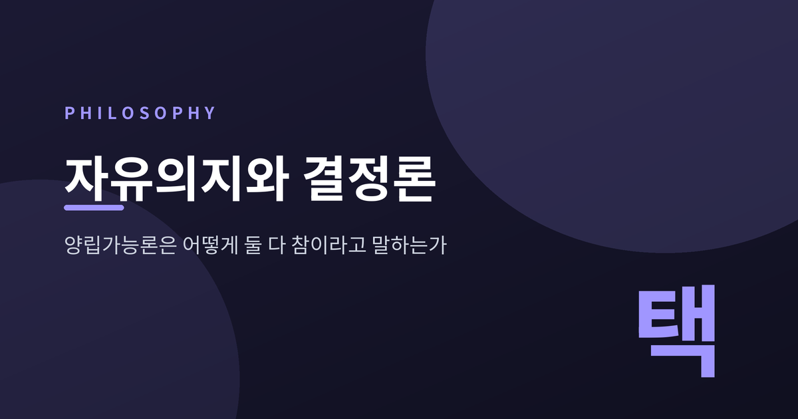
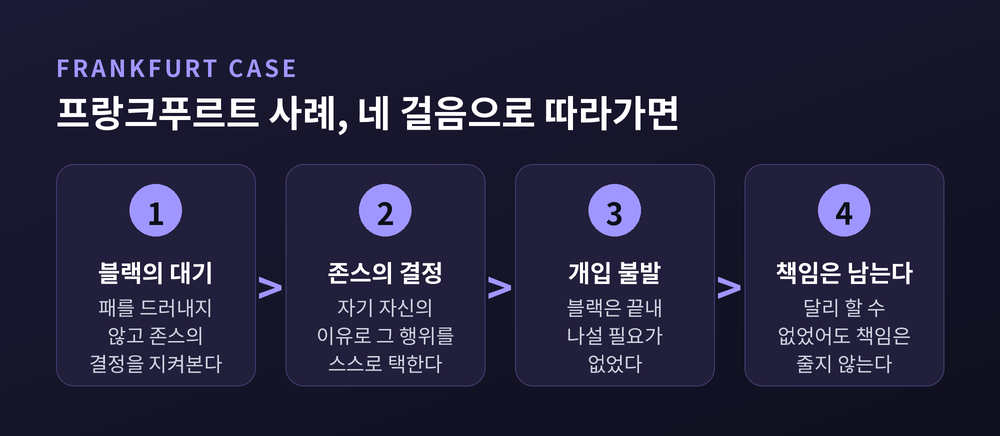
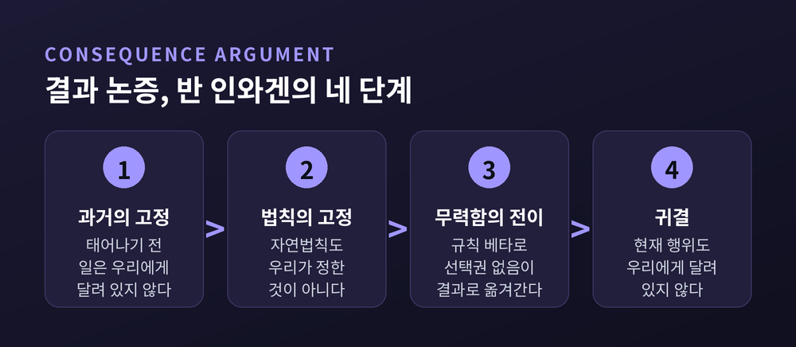
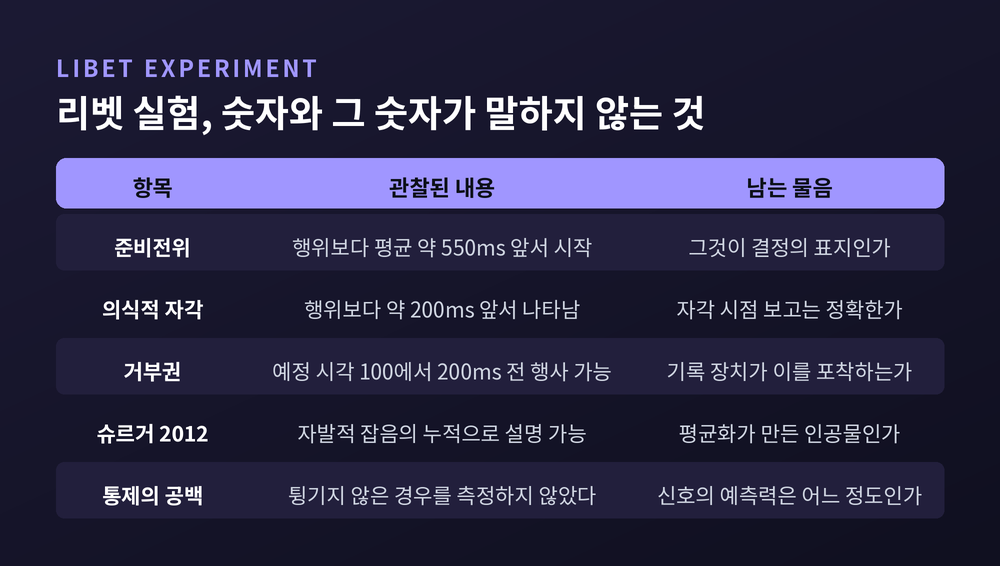
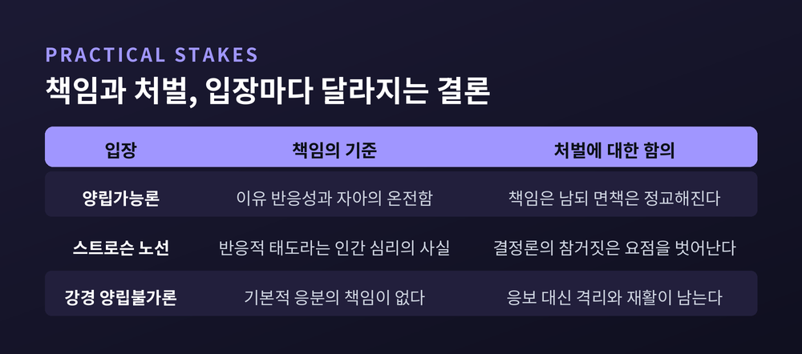

이번 글에서는 자유의지와 결정론을 둘 다 받아들이려는 입장, 곧 양립가능론을 정리해 보겠습니다. 결정론이 무엇을 주장하는지부터 시작해, 홉스와 흄의 고전적 해법, 프랑크푸르트의 사고실험, 그리고 이 입장을 향한 가장 단단한 반론까지 차례로 따라가겠습니다. 어느 쪽이 옳은지 판정하지는 않겠습니다. 이 문제는 아직 판정이 나지 않았습니다.
인과적 결정론의 표준 정의는 간명합니다.
"모든 사건은 선행하는 사건·조건과 자연법칙에 의해 필연화된다."
더 정밀하게 말하면 이렇습니다. 어떤 시점의 세계 상태가 특정되면, 그 이후 세계가 어떻게 전개되는지는 자연법칙에 의해 고정됩니다. 과거와 법칙이 정해지면 미래는 하나뿐이라는 구조입니다. 발상 자체는 고대부터 있었습니다. 다만 명료하게 정식화되고 수학적 분석의 대상이 된 것은 18세기에 이르러서였습니다.
여기서 두 가지 오해를 먼저 걷어내야 합니다.
첫째, 결정론은 숙명론이 아닙니다. 숙명론은 내가 무엇을 하든 결과가 같다고 말합니다. 결정론은 정반대입니다. 내가 하는 행위 자체가 원인의 연쇄에 속해 있고, 그래서 결과에 실제로 영향을 줍니다. 두 주장은 전혀 다릅니다.
둘째, 결정론은 예측가능성과 같지 않습니다. 결정론적 법칙을 따르면서도 사실상 예측할 수 없는 체계가 있을 수 있습니다. 반 인와겐도 이 점을 지적한 바 있습니다.
자유의지 논쟁에서 실제로 쓰이는 전제는 생각보다 적습니다. 반 인와겐은 두 가지만 사용했습니다. 과거는 고정되어 있다는 것, 그리고 자연법칙은 우리가 정한 것이 아니라는 것. 이 두 가지만으로 논쟁이 시작됩니다.
논쟁의 지형은 먼저 두 갈래로 나뉩니다.
양립가능론은 자유의지가 결정론과 양립할 수 있다고 봅니다. 자유의지가 도덕적 책임의 필요조건으로 여겨지기 때문에, 이 주장은 종종 "도덕적 책임과 결정론은 양립한다"는 형태로도 표현됩니다.
양립불가론은 반대입니다. 결정론이 참이라면 우리가 자유의지를 가진다는 믿음은 거짓이 됩니다. 이쪽은 다시 둘로 갈립니다.
자유지상주의는 적어도 일부 사람이 자유의지를 가진다고 봅니다. 따라서 결정론이 거짓이라고 결론짓습니다. 강경결정론은 결정론이 참이라고 보고, 따라서 누구도 자유의지를 갖지 않는다고 결론짓습니다. 스탠퍼드 철학백과는 이 입장을 "덜 낙관적인 견해"라고 표현합니다.
실제 철학자들의 분포는 어떨까요. 2020년 필페이퍼스 설문에 약 1,800명이 응답했습니다. 양립가능론이 대략 60% 안팎, 자유지상주의가 13~19%, 자유의지가 없다는 쪽이 10~11% 정도로 보도됩니다. 보도마다 수치에 차이가 있어 폭을 두고 읽어야 합니다. 2009년 설문과 비교하면 양립가능론이 소폭 늘었습니다.
다만 이 수치를 오독하지 않으셨으면 합니다. 다수가 지지한다는 사실과 그 입장이 옳다는 것은 별개입니다.
짚어둘 대목이 하나 더 있습니다. 비결정론을 도입한다고 자유가 자동으로 확보되지는 않습니다. 케인의 자기형성행위 이론은 두 선택지 사이에서 찢긴 행위자를 그립니다. 어느 노력이 이길지는 인과적으로 미결정입니다. 그런데 바로 여기서 운 반론이 나옵니다. 결과가 미결정인 채로 한쪽이 이겼을 뿐이라면, 행위자가 그 결과를 통제했다고 보기 어렵습니다. 행위자가 사라지는 것 아니냐는 지적입니다.
고전적 양립가능론은 근대 경험론자인 홉스와 흄에게서 형태를 갖추었고, 20세기 초에 다시 살아났습니다.
핵심 발상은 이렇습니다. 자유란 방해물이 없는 상태에서 자기가 원하는 것을 할 수 있는 능력, 그 이상이 아닙니다.
홉스는 자유를 외적 방해물의 부재로 규정했습니다. "자유로운 행위자란 원하는 대로 할 수 있고 원하는 대로 그만둘 수 있는 자이며, 자유란 외적 방해물의 부재다." 흄도 비슷합니다. 그가 쓴 말은 자유의지가 아니라 '자유'였습니다. 의지의 결정에 따라 행하거나 행하지 않을 수 있는 힘, 그것이 자유라는 것입니다. 가만히 있기로 택하면 그럴 수 있고, 움직이기로 택하면 그럴 수 있습니다.
전략의 핵심은 대립항을 바꾸는 데 있습니다.
예전에는 자유의 반대말이 '필연'이라고 여겼습니다. 이제는 자유의 반대말이 '강제'와 '구속'이 됩니다. 사슬에 묶인 사람은 자유롭지 않습니다. 총구에 떠밀린 사람도 자유롭지 않습니다. 그러나 원인에 따라 움직인다는 사실만으로는 부자유하지 않습니다.
이 전략을 뒷받침하는 장치가 조건 분석입니다. "달리 할 수 있었다"를 "만일 달리 하기를 원했다면 달리 했을 것이다"로 읽습니다. 이 반사실 조건문은 결정론이 참이어도 참일 수 있습니다. 기원은 흄에게 있고, 20세기에는 에이어와 스테이스, 데닛이 이 노선을 이어받았습니다.
한계도 분명합니다. 치좀과 레러, 반 인와겐이 같은 지점을 찔렀습니다. 원하기만 했다면 할 수 있었다는 말이 참이어도, 그 원함 자체를 가질 수 없었다면 진짜 능력이라 부르기 어렵다는 것입니다.

1969년 해리 프랑크푸르트가 논문 한 편을 내놓습니다. 표적은 다른 가능성의 원리, 줄여서 PAP였습니다.
PAP는 이렇게 말합니다. "행위자는 달리 할 수 있었을 경우에만 그 행위에 도덕적 책임이 있다."
이 원리가 왜 중요한가. PAP는 양립불가론의 핵심 논증을 떠받치는 기둥이기 때문입니다. 논증은 세 줄로 정리됩니다. 책임은 달리 할 수 있음을 요구한다. 달리 할 수 있음은 결정론이 거짓일 때만 가능하다. 따라서 책임은 결정론이 거짓일 때만 가능하다.
전통적 양립가능론자들은 두 번째 줄을 공격했습니다. 프랑크푸르트는 달랐습니다. 그는 첫 번째 줄, PAP 자체를 겨눴습니다.
사고실험은 이렇습니다.
블랙은 존스가 특정 행위를 하기를 원합니다. 목적을 위해 상당한 수단을 쓸 준비가 되어 있지만, 불필요하게 패를 드러내기는 꺼립니다. 그래서 기다립니다. 존스가 다른 것을 결정하려 한다는 점이 분명해지기 전까지는 아무것도 하지 않습니다. 블랙은 그런 것을 판별하는 데 탁월합니다.
만약 존스가 다른 쪽으로 기울면, 블랙은 효과적인 조치를 취합니다. 프랑크푸르트가 든 예는 끔찍한 위협, 물약이나 최면, 혹은 존스의 뇌와 신경계의 미세 과정을 직접 조작하는 것입니다. 존스의 초기 선호가 무엇이든 블랙은 뜻을 이룹니다.
그런데 블랙은 끝내 나서지 않았습니다. 존스가 자기 자신의 이유로 바로 그 행위를 결정하고 실행했기 때문입니다.
프랑크푸르트는 묻습니다. 이 경우 존스의 책임은 줄어듭니까.
그는 줄지 않는다고 답합니다. 달리 할 수 없었다는 사실을 근거로 존스를 면책하는 것은 매우 불합리할 것이라고 씁니다. 그렇다면 도덕적 책임은 달리 할 자유를 요구하지 않습니다. PAP는 거짓입니다.
중요한 것은 그가 왜 그렇게 하는가입니다. 이 한 문장이 논쟁의 축을 옮겼습니다.
물론 반론이 있습니다. 위더커와 기넷, 케인이 제기한 두 뿔 딜레마가 대표적입니다. 성향과 결정의 연결이 결정론적이라면 논쟁 중인 것을 전제해 버리는 셈이고, 비결정론적이라면 행위자에게 달리 할 여지가 남는다는 지적입니다. 피셔는 사례가 홀로 설 수 없고 다른 논증과 함께 취해져야 한다고 응수했고, 헌트는 완충 지대를 도입한 수정 사례를 제안했습니다. 오츠카는 PAP 대신 회피가능한 비난의 원리를 내세웠습니다.
결론이 났냐고 물으신다면, 아직입니다. 응답들은 여전히 논쟁 중입니다.
프랑크푸르트는 1971년 논문에서 자유를 다른 자리에 놓습니다.
인격과 다른 피조물의 본질적 차이는 의지의 구조에 있다는 것입니다.
1차 욕구는 무언가를 하고 싶다는 욕구입니다. 2차 욕구는 그 욕구에 대한 욕구입니다. 여기서 한 걸음 더 나아간 것이 2차 의욕입니다. 어떤 1차 욕구가 자신의 의지가 되기를 바라는 것입니다.
프랑크푸르트의 표현은 이렇습니다. "원하고자 하는 것을 원할 자유가 있을 때 의지의 자유를 누린다."
반대편에 방탕자가 있습니다. 방탕자는 욕구를 통제하지 못해서 방탕자인 것이 아닙니다. 욕구에 대한 욕구를 형성하지 못해서 방탕자입니다. 중독자 사례가 겨누는 지점도 같습니다. 그저 욕구에 따라 행위하는 것과, 자신이 진정으로 승인하는 욕구에 따라 행위하는 것은 다릅니다.
이 이론의 힘은 질문을 바꾸는 데 있습니다. 다른 선택지가 있었느냐가 아니라, 이 의지가 진짜 내 것이냐를 묻습니다. 결정론의 참·거짓과 독립적으로 물을 수 있는 질문입니다.
위계만으로는 부족하다는 반론이 곧 나옵니다. 수전 울프의 조조 사례가 그것입니다.
조조는 아버지를 우러러보며 자랍니다. 함께한 활동들이 그의 깊은 자아를 뒤틀어, 결국 조조는 다른 인간을 고문하고 살해하는 데서 아무런 잘못을 보지 못하게 됩니다. 조조는 진심으로 자기가 그런 사람이기를 원합니다. 2차 의욕과 1차 욕구가 완벽히 일치합니다.
그런데도 울프는 조조에게 책임을 물을 수 없다고 봅니다. 그 일치 자체가 유전과 환경의 산물이기 때문입니다.
울프가 덧붙이는 조건이 온전함입니다. 세계를 있는 그대로 인지적으로 파악하는 능력을 말합니다. 그의 이성관은 자신의 가치가 이성에 의해 결정될 때 자유롭다고 봅니다. 울프는 나아가 비대칭을 주장합니다. 옳은 일을 할 때는 자유롭지만 그른 일을 할 때는 정념의 노예일 뿐이라는 것입니다. 이 비대칭은 논쟁적인 주장이므로 그대로 받아들이기보다 울프의 입장으로 보아두는 편이 좋겠습니다.
피셔와 라비자는 1998년 저작에서 더 정교한 장치를 제시합니다. 유도 통제입니다. 이것은 적당한 이유 반응성과 소유로 이루어집니다.
이유 반응성은 실제 계열, 곧 행위로 이어진 메커니즘의 속성에 주목합니다. 어떤 메커니즘이 이유 반응적이라는 말은, 여러 이유가 제시되고 그 메커니즘이 간섭 없이 작동할 때 그 이유들에 적절히 반응할 것이라는 뜻입니다. 소유는 그 메커니즘이 행위자 자신의 것이어야 한다는 조건입니다.
두 사람이 내세운 입장을 준양립가능론이라 부릅니다. 양립 가능성의 표적을 줄이는 전략입니다. 자유의지라는 넓은 영역 대신 도덕적 책임과 행위자 통제에 초점을 맞춥니다. 설령 결정론이 '달리 할 수 있음'을 제거하더라도 도덕적 책임은 살아남는다는 것입니다.
다만 두 사람도 선을 그어둡니다. 유도 통제는 책임에는 충분하지만, 비난받아 마땅함에는 추가 조건이 필요합니다.

양립가능론이 가장 크게 부딪히는 벽은 결과 논증입니다. 기넷과 위긴스, 램이 기여했고, 반 인와겐이 1983년 저작에서 정식화했습니다. 스탠퍼드 철학백과는 이 논증을 양립불가론을 위한 가장 좋은 논증으로 널리 인정된다고 평가합니다.
반 인와겐의 비형식적 정식은 이렇습니다.
결정론이 참이라면 우리 행위는 자연법칙과 먼 과거 사건들의 결과다. 그런데 우리가 태어나기 전에 무슨 일이 있었는지는 우리에게 달려 있지 않고, 자연법칙이 무엇인지도 우리에게 달려 있지 않다. 따라서 그것들의 결과인 것들, 현재 우리 행위를 포함해서, 그것들도 우리에게 달려 있지 않다.
형식 버전은 연산자 하나를 도입합니다. 'Np'는 "p이고, 누구도 p인지 아닌지에 대해 선택권을 가진 적이 없다"를 줄인 것입니다. 여기에 두 규칙이 붙습니다. 규칙 알파와 규칙 베타입니다. 베타는 무력함의 전이를 말합니다. Np이고 N(p면 q)이면 Nq라는 것입니다.
과거의 고정성을 뜻하는 NH와 법칙의 고정성을 뜻하는 NL을 전제로 넣고 베타를 두 번 적용하면 NP가 나옵니다. 결정론이 참이면 어떤 참인 명제에 대해서도 누구도 선택권을 가진 적이 없다는 결론입니다. 우리의 자유로워 보이는 행위에 관한 명제도 여기 포함됩니다.
이 논증의 무게는 가볍지 않습니다. 반 인와겐 본인은 양립가능론 측 분석을 받아들이지 않으며, 자신과 상대가 서로를 혼란에 빠졌거나 단순한 실수를 하는 것으로 여긴다고 말한 적도 있습니다.
그런데 이 논증도 무결점은 아닙니다. 여기가 자주 생략되는 대목입니다.
맥케이와 존슨은 1996년에 규칙 베타가 문제적 귀결을 함축함을 보였습니다. 그리고 2000년, 반 인와겐 본인이 베타가 타당하지 않음을 인정했습니다. 이후 베타를 베타 2로 교체해 논증을 복구하려는 시도가 이어지고 있습니다. 논증이 무너졌다는 뜻은 아닙니다. 다만 최강의 반론조차 수선을 거치며 버티고 있다는 뜻입니다.
양립가능론 측 응수도 여럿입니다. 데이비드 루이스의 국소 기적 양립가능론이 가장 영향력 있는 응답으로 꼽힙니다. 다만 헬렌 비비는 이 입장이 행위자가 법칙을 깨뜨릴 능력을 가진다는 귀결을 허용해 유지될 수 없다고 비판했고, 오클리 등은 비비가 논박에 성공하지 못했다고 반박합니다. 양쪽 다 살아 있습니다.
더 근본적인 응수도 있습니다. "과거는 고정, 미래는 열림"이라는 상식에서 과거의 절대적 필연성을 끌어내는 추론이 너무 빠르다는 지적입니다. 이 대비는 인과의 시간적 비대칭으로도 설명됩니다. 원인은 언제나 결과보다 앞섭니다. 과학철학자들의 주된 견해에 따르면 이 비대칭은 근본적이지만 우연적인 사실입니다. 그렇다면 과거가 형이상학적으로 필연적이라고 가정할 필요가 없어집니다. 과거는 달랐을 수도 있습니다. 다만 실제 사정상 우리가 과거에 인과적으로 영향을 줄 방법이 없을 뿐입니다.
결과 논증이 형이상학 쪽에서 오는 공격이라면, 조작 논증은 직관 쪽에서 옵니다. 데릭 페레붐의 네 사례 논증이 대표적입니다.
주인공은 플럼 교수입니다. 플럼은 양립가능론이 요구하는 책임 조건을 모두 충족하도록 설정됩니다. 이유에 반응하고, 1차 의지가 2차 의욕과 일치하며, 도덕적 이유와 타산적 이유를 모두 고려할 수 있고, 성격에 맞게 행위합니다.
네 사례는 조작의 정도만 다릅니다. 첫 사례는 명백한 외적 조작입니다. 뒤로 갈수록 조작은 옅어지고, 마지막 사례는 그냥 평범한 결정론적 세계의 보통 행위자입니다.
페레붐의 물음은 이것입니다. 첫 사례에서 플럼에게 책임이 없다면, 그 차이들이 정말 책임을 만들어낼 만큼 중요합니까.
양립가능론자들의 응답은 두 갈래입니다. 강경 노선은 조작당한 플럼에게도 책임이 있다고 맞섭니다. 온건 노선은 조작 시나리오와 양립가능론적 행위 구조 사이에 원리적 차이가 있음을 보이려 합니다. 방법론적 반론도 있습니다. 신경 조작 장치가 등장하는 사고실험은 논증이 부정하려는 바로 그 차이를 슬쩍 전제한다는 지적입니다.

이 논쟁에서 가장 자주 소환되는 실험이 리벳 실험입니다. 그리고 가장 자주 과장됩니다.
절차는 단순합니다. 피험자는 충동이 느껴질 때 아무 때나 손목을 굽히거나 튕깁니다. 외적 제약 없이 변덕스럽게 수행하라는 지시를 받습니다.
결과는 이렇습니다. 준비전위는 행위보다 평균 약 550밀리초 앞서 시작합니다. 의식적 의도의 자각은 준비전위 시작 이후 약 350에서 400밀리초 뒤, 그러니까 행위보다 약 200밀리초 앞서 나타납니다.
통속적 해석은 여기서 곧장 결론으로 건너뜁니다. 뇌가 먼저 움직이고 의식은 뒤늦게 통보받는다는 것입니다.
그런데 리벳 자신은 여지를 남겼습니다. 피험자는 예정된 행위를 거부할 수 있었고, 그 거부는 예정 시각 이전 100에서 200밀리초 구간 안에서 행사되었습니다. 의식적 자유의지는 없을지 몰라도 의식적 거부권은 남을 수 있다는 것이 리벳의 제안이었습니다.
반론은 더 깊이 들어갑니다.
가장 많이 인용되는 재해석은 슈르거와 동료들이 2012년에 내놓은 확률적 누적기 모형입니다. 준비전위는 느리고 결정론적인 준비 과정이 아니라, 자발적 신경 잡음에 구동되는 누출성 확률적 누적기로 설명할 수 있다는 것입니다. 움직이라는 명령이 약할 때 결정 임계값을 넘는 순간은 주로 역치하 활동의 자발적 요동이 결정합니다. 움직임 시작 시점에 맞춰 평균을 내면 그 요동이 점진적으로 증가하는 곡선처럼 보이게 됩니다. 요컨대 준비전위는 결정의 표지가 아니라 평균화가 만든 인공물일 수 있습니다.
리벳 자신이 인정한 공백도 있습니다. 피험자가 실제로 손가락을 튕기지 않았을 때 준비전위가 얼마나 자주 형성되었는지를 측정하지 않았습니다. 그런 경우가 잦다면 그 신호의 예측력은 크게 흔들립니다. 멜은 기록 장치가 행위 자체에 의해 촉발되므로 거부권 사례는 애초에 포착되지 않는다고 지적합니다. 과제의 인공성도 쟁점입니다. 아무 이유 없이 손목을 튕기는 임의적 행동이 숙고를 거친 결정과 같은 종류인지는 분명하지 않습니다.
정리하면 이렇습니다. 리벳 실험은 자유의지를 배제하지 못했습니다. 그렇다고 증명한 것도 아닙니다.
한 가지 더 덧붙이겠습니다. 양립가능론의 눈으로 보면 이 실험은 애초에 표적을 빗맞힙니다. 양립가능론은 선행 원인이 없어야 자유롭다고 주장한 적이 없기 때문입니다. 뇌 활동이 결정에 선행한다는 사실은 비결정론적 자유를 요구하는 쪽에만 부담이 됩니다.

이 논쟁은 형이상학에서 끝나지 않습니다. 처벌과 책임의 실천에 곧장 닿습니다.
스트로슨은 1962년 논문에서 논의의 방향을 틀었습니다. 결정론이 참인지 아닌지는 도덕적 책임 문제에서 요점을 벗어난다는 것입니다. 우리는 타인의 행위에 정서적으로 반응하지 않을 수 없고, 바로 그 반응적 태도들이 칭찬과 비난의 실천을 떠받칩니다. 원망과 감사와 분개가 그런 태도입니다. 이것들은 단순히 책임을 묻는 것을 넘어 사과에 대한 기대, 용서, 애정의 변화까지 포함하는 그물망을 이룹니다. 그 반대편에 상대를 관리와 치료의 대상으로 보는 객관적 태도가 있습니다. 스트로슨이 보기에 논쟁의 양측 모두 책임의 진짜 토대를 놓쳤습니다. 그 토대는 인간의 정서적 심리라는 직조물에 있습니다.
정반대 방향에서 페레붐이 있습니다. 그의 강경 양립불가론은 실재가 결정론적이든 비결정론적이든 우리에게 기본적 응분의 도덕적 책임은 없다고 봅니다. 양립가능론과 자유지상주의를 함께 거부하는 입장입니다.
여기서 응보주의가 문제가 됩니다. 응보주의는 잘못임을 알면서 잘못을 저질렀다는 바로 그 이유로 나쁜 일을 당해 마땅하다고 말합니다. 자유의지 회의론과는 양립할 수 없습니다. 페레붐과 카루소는 대안으로 공중보건-격리 모형을 제시합니다. 자기방어의 권리에 기초한 무력화 설명이며, 격리의 정당화와 유비됩니다. 응보와 가혹한 처벌은 배제되지만, 제재는 무력화와 재활과 억제라는 다른 목적에 여전히 봉사할 수 있습니다.
그런데 양립가능론을 택한다고 해서 기존 책임 실천이 그대로 유지되는 것도 아닙니다. 이 점은 자주 오해됩니다.
피셔와 라비자에 따르면 유도 통제는 책임에 충분하지만 비난받아 마땅함에는 조건이 더 필요합니다. 울프에 따르면 깊은 자아가 유전과 환경에 의해 왜곡된 경우 책임을 물을 수 없습니다. 양립가능론은 "모두가 언제나 책임이 있다"는 주장이 아닙니다. 책임의 기준을 다른 곳으로 옮기는 주장입니다. 대안 가능성이 아니라 이유에 반응하는 능력, 자아의 온전함, 의지의 진정성으로 말입니다. 그 기준은 오히려 면책의 범위를 더 정교하게 넓힐 수도 있습니다.
끝으로 한 마디만 더 드리겠습니다.
양립가능론은 자유의지와 결정론을 억지로 화해시키는 봉합술이 아닙니다. 자유라는 말이 애초에 무엇을 가리켰는지를 다시 묻는 작업에 가깝습니다. 사슬이 없는 상태인지, 원인이 없는 상태인지. 이 물음에 어떻게 답하느냐에 따라 같은 사실이 전혀 다른 결론으로 이어집니다.
물론 이 입장이 모든 반론을 막아낸 것은 아닙니다. 결과 논증은 여전히 단단하고, 조작 논증은 여전히 아픕니다. 어느 쪽도 상대를 무너뜨리지 못한 채 반세기가 지났습니다.
"자유의 반대말이 필연인지 강제인지, 그 한 단어에서 모든 것이 갈립니다."
그래서 이 문제가 풀렸느냐고 물으신다면, 아직이라고 답하겠습니다. 다만 무엇을 묻고 있었는지는 훨씬 또렷해졌습니다.